The Palmer, Alcock, Sharp & Tindall Trust (P.A.S.T.)
“That even now, while we are placed among things that are passing away; to cleave to those which shall abide”Past Vicars of Ashford (1847 – 2002)
orWhere did it all go so wrong??
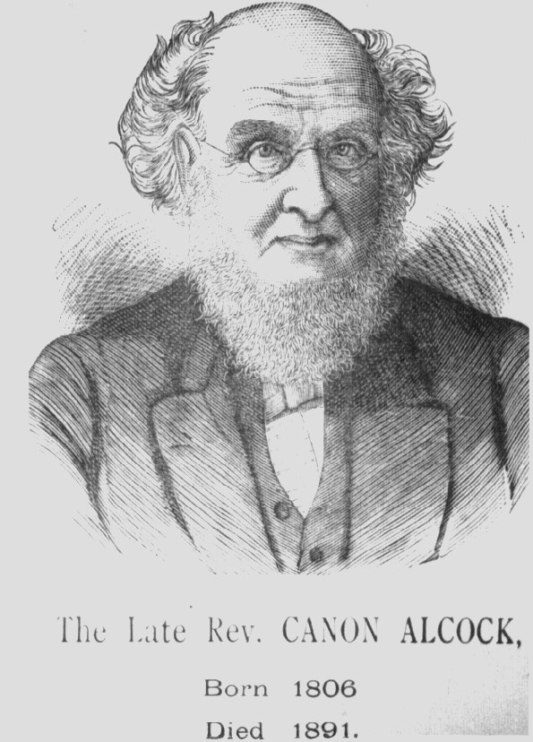
Canon John Price Alcock M.A. Cantab. (St. John's College) - 'Read in' 1847
Canon Alcock was responsible for a great many developments in the Parish. Not least among these achievements were his endeavours in seeing to the erection of Christ Church, Beaver Road, South Ashford. It continued as a daughter church of Ashford Parish Church until 1959, when it became a separate parish - a response to the post-war building and influx of inhabitants. In the current climate of financial hardship for the CofE, would it not be as well to merge both parishes again however? He also saw to it that the Church in Forge Lane which had been built and occupied by the primitive Methodists was purchased from them for the Church of England, and became the Mission Church of St. Paul. Sadly this was sold-off many years ago and today it is used by the Ashford Scouts. Canon Alcock also exercised a constant care and concern for the St Mary's School. It was Canon Alcock's leadership, as well as the regular attendance of folk at church in his day as a general rule which necessitated the enlargement of the church and additions to the galleries. With regard to Canon Alcock's works on the Parish Church, there was scarcely a part of the church which did not receive attention. In line with the fashions of the day the church received a considerable makeover, greatly enhancing its proportions and making it neat and ordered. Where often the Oxford Movement folk spoilt many a village church, it will be appreciated when comparison is made of pictures of the church before and after works of new pews, addition of Lectern & steps and reredos, that the Victorian additions and replacements lend additional dignity to the building.
The interior of Ashford Parish Church c.1850 looking west - prior to the works described here.
The pews which were formerly in the church while good of their kind did not look so geometrically pleasing to the eye as those which were installed in 1879, and these are the pews we have today. Unfortunately a number of these pews have already been removed since the 1950's - both transepts were pewed at one stage. When the new pews were installed in 1879, there was space to accommodate 1,700 worshippers! The pews cost £1200 - £51,972 in today's money (as at Nov 1st 2009) About 1860, Canon Alcock also saw to it that a good choir of boys and men should be present to enhance the worship at services. Dr Wilks was appointed Organist and Choirmaster, later becoming Precentor (a sort of Honorary Position) and Messrs Legge & Horton then became respectively Organist & Choirmaster, and Deputy Organist. Dr Wilks was very involved with many aspects of the life of the Parish, and the administration of several of the Parochial Charities. The tradition of a boys and mems choir continued at Ashford until about 1987, when, unhappily, certain (supposedly egalitarian) members of the congregation caused such a fuss, that the choir had to be opened to girls. The usual end result of many of the boys taking up the notion that singing was 'girls stuff' unfortunately perpetuated, and the choir has never reached the heights that it had previously done since that time. Since the last Vicar's departure, circumstances have worsened for the choir, and it must be hoped that the tradition begun by Dr Wilks will one day be rejuvenated.
The old wooden reading desk (which had been given in 1855 by Mr Geo Elwick Jemmett) was replaced by an Eagle of Brass lectern in 1880, which was purchased by subscription. The oak steps with enclosure which one ascends to read the Lessons from the lectern were added by Mrs Alcock in 1882. These steps bear attachable high candleholders to be attached during the major festivals of the church. The reading desk was for a while used as a pulpit - the old triple-decker wooden pulpit having been taken down, although this was in its turn replaced by the current impressive finely carved pulpit of Hoptonwood Stone in 1897 - Queen Victoria's Diamond Jubilee Year the gift of Robert & Harriett Elliot, generous members of the congregation. The old wooden altar reredos was presented to the Mission Church of St Paul in Forge Lane, and was replaced by the present beautiful reredos of alabaster and marble in 1882; presented by another famous inhabitant of the town, Mr George Furley. In the 1970's certain parts of the stonework on this reredos were also picked-out in beautiful colour, which has only served to enhance the piece. One of the final projects of Canon Alcock's long and successful Ministry was the replacement of the tower clock and carillon which had both got out of order. The old carillon had been installed and set going on Tuesday 4th June 1816. In 1885 the old clock and carillon (being worn out, so it was said) were swept away, and replaced by the current clock and carillon. The old clock had a very large and quaint wooden dial to the South only, whereas the new clock had faces to North and South, and the dials as can be seen today are that much smaller than the old wooden dial. In order that the National Anthem be correctly and loyally played on the carillon, two small bells (one inscribed J.P.A. - Canon Alcock's initials) were added to the ringing octave in 1885 (these bells were only for the use of the carillon) and the clock and carrillon were set going by Canon Alcock on Ascension Day 14th May 1885. Recently the clock face was regilded and the mechanism had work done to it as the hands had seized. It is now in good going order again, but sadly the carillon has not worked since the end of Canon Everett's incumbency. Fortunately, a recording of the carrilon when it still worked can be listened to by clicking here. Canon Alcock retired in 1887. The Parish Magazine was started by Canon Tindall in May 1888, and in the June number the following very interesting summary of Canon Alcock's work in the parish during his 40 year incumbency was published:

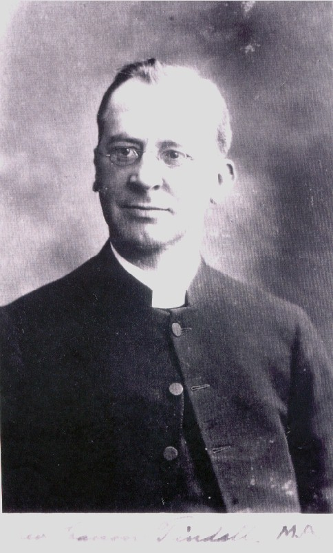
Canon Peter Francis Tindall M.A. - 'Read in' 1888
The major works to the fabric of the building having been largely
completed, Canon Tindall did not have a great deal of work to see to on
the fabric. Exceptions to this, however were the installation of
the current impressive (possibly the most valuable single item of
furniture int he church) finely
carved pulpit of Hoptonwood Stone which was erected in 1897 - Queen
Victoria's Diamond Jubilee Year. It was the last work of the
famous Truro Cathedral architect, John Loughborough Pearson. Also
the Chapel of St Anne was restored to the memory of a realtive of Canon
Tindall's and a beautiful new pavement was laid in the sacrarium in
about 1905. This pavement is extremely similar to that in the
Sacrarium at Truro Cathedral and one may conjecture as to the possible
link which led Ashford to receive a sacrarium pavement designed to the
same specification as the noble Cathedral of Truro. 
The Way of Salvation - by Canon Tindall
With the church fabric therefore in a good condition, Canon Tindall turned his attention to providing for the social as well as the spiritual needs of the Parish. On arriving in Ashford (inducted 25th Jan 1888) he found the town 'sunk in the depths of Protestantism' and then embarked on lifting the churchmanship to what was later called 'Tractarian. Eucharist became the chief Sunday service (especially 8am which saw the greatest number of Communicants, though Matins & Sermon was retained). Evensong was a great gathering for the people of the town. Up until January 1907, fees were still charged for the best seats in the Church at Evensong, which service drew the greatest numbers of the day, but from then on - to the Vicar's great pleasure - all seats became 'free and unadopted' by resolution of the 'Vestry'. Mass (BCP) was celebrated daily, and Canon Tindall was reputed to hear more confessions than any other Priest in East Kent. Despite all this, the actual externals of Anglo-Catholicism were kept rather low-key: Eucharistic Vestments were not worn. Canon Tindall firmly believed that if the church could triumph in sports and other competetive social activity, souls may that way be brought to Christ. This was, clearly, an excellent plan upon which to embark, and with excellent pastoral opportunities. Thus Canon Tindall oversaw the building of the Large Parish Room and the Fellowship Room (alas, both have since been demolished) which were used by many of the organisations he founded and encouraged - not least the large 'Church House' Clubs which he founded and which met in the Fellowship Room. Pictures of a number of these organisations can be found on this page.


Tindall's way of doing things was so right that Ashford Parish became one of those places where the best Curates served their title - those destined for great things in the Church. Thus, during Canon Tindall's time we note that - to name but two - David Railton (Later Rector of Liverpool) and Herbert Arthur Wilson (later of Haggerston) were both Curates at Ashford. The Curates were entertained to dinner each Sunday night after Evensong by Canon & Mrs Tindall and retired to the large study at The College where they would smoke his cigars while sitting in long leather armchairs and would listen to the Vicar's tales of the town and its people. There would also be Saturday bicycle rides to look for wild lilies on the Elham Downs and bicycle paperchases through Wye & Brabourne. Also in the summer especially, after work, there were long evening rides over Romney Marsh through Ivychurch & St Mary's-in-the-Marsh to bathe at Dymchurch and a return journey in the dark, bloated by vast quantities of tea and eggs, looking for the dancing fairies who were reputed to appear under the moon at Aldington Knoll. Canon Tindall left Ashford Parish to take up the Freehold of Folkestone Parish Church at the outbreak of the Great War in 1914.
*Some of the above information was gleaned from the Book "Fr Wilson of Haggerston - a life simply offered - by Rev. Trevor Jones SSC
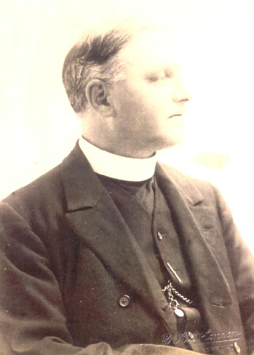
Rev. Lionel Payne Crawfurd M.A. - 'Read in' 1914
Rev Crawfurd held the living for only a very brief period and was sad
to leave the town so soon after being appointed. Later in his
Ministry he became Bishop of Stafford.
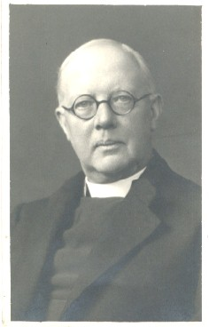
Canon Thomas Karl Sopwith M.A. - 'Read in' 1915
Canon Sopwith was responsible for seeing to the erection of the
fine rood screen which was put up to the memory of those Men of the
Parish who fell in the Great War. The screen was designed by the
famous architect W.A. Caroe F.S.A. and a board recording the
names of those who fell which was formerly situated at the west end,
may now be found on the wall near the South Door, though it is not well
positioned. Parish Magazines of the period tell of quite
extraordinary circumstances where those in charge of erecting the Rood
Screen seemed, effectively to be striking and refusing to do certain
work, and other objectionable behaviour, whcih explains why it took so
long to get the screen completed! Mr F.C. Palmer our late esteemed
Sacristan, who had served the church since his youth was baptised
during Canon Sopwith's incumbency, though he was careful to say that he
wasn't baptised by Canon Sopwith, but by one of the Curates.
Later, Canon Sopwith became Vicar of
Hollingbourne.
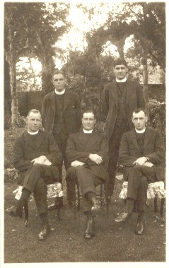
Canon Harry William Blackburne M.C. , M.A. - 'Read in' 1924
Canon Blackburne was a quite extraordinary man who rose to become Dean of Windsor and Chaplain to H.M. The King in his Ministry. He was also much relied upon by Archbishop Davidson during the controversy surrounding the 1928 Prayer Book Revision. As Canon Blackburne left very little in the way of additions to the building - save for the restoration of both the side altars following the addition of the upper stage of the Choir Vestry in 1927, and thus the ability to reinstate the North Transept which had been used as a Clergy Vestry for many years - we can therefore concentrate rather more on looking at how his Ministry impacted on the people of the Parish. To those who know the Church today, it is currently a very sad relic of a former glorious past. Canon Blackburne having been Padre in the Great War was a natural choice for Chairman of the local Branch of the British Legion, and each Armistice Day, in addition to the usual memorial service and silence which was held in the town centre, an evening service was held in Ashford Parish Church. The Church was always filled to overflowing at this service, and a feature was that a distinguished preacher would always deliver the Sermon. Bishop Gore attended on a number of occasions, again, packing the Church largely with men from the Railway Works. One of Canon Blackburne's well known curates was Rev. Ian White-Thomson, and his Churchwarden was Julius Kingsford, of the firm of Solicitors, still in the town. Paul Steinitz was the Organist and Choirmaster - he also had a very illustrious musical career, in 1945 founding the London Bach Society. In short, the men involved with the day-to-day running of Ashford Church were of the highest calibre: hard to imagine when we look around at the state of the church today.Every three years a huge fete was held to raise money for Curates' stipends and maintenance of the Churches and Parish Rooms. These again, were opened by distinguished guests including Lady Patricia Ramsey, Princess Victoria Helena (a grand-daughter of Queen Victoria) and the Duke & Duchess of York who visited the Railway works, and the Duke was permitted to drive a locomotive. Later they laid the foundation stone for the new Ashford Hospital.
Every year an outing was arranged for the Sunday School children and their parents and a special train would be laid on which would be completely filled!
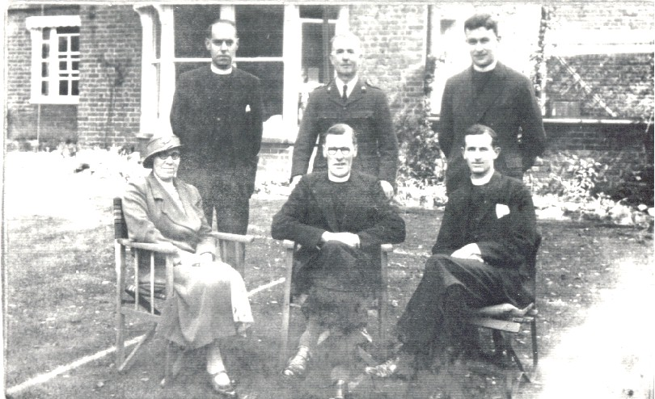
Rev. Ronald Sutherland Brook Sinclair M.C. , M.A. - 'Read in' 1931
Rev. Sinclair does not appear to have pioneered any new ideas in the
church during his Incumbency, although this was perhaps understandable
given that he was in rather indifferent health for much of his time at
Ashford. I have not to date found anything of note regarding his
time at Ashford. It appears that, in later years his health did
improve as he did eventually rise to the offices of Canon of
Chester and Provost of Guildford
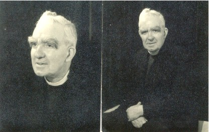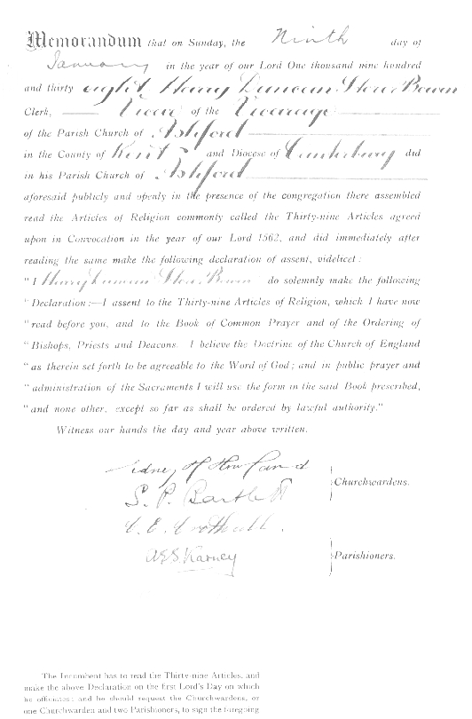
Canon Harry Duncan Storer Bowen - 'Read in' 1938
Canon Bowen came to Ashford not long before war broke out, and so,
naturally the first years of his Ministry were taken up with the war
effort on the home front. No doubt there are many interesting
stories from this time, although it may sadly be that none were written
down, and that this being the case, there is now no-one still living
who could relate such tales. The late respected Mr F.C. Palmer
described Canon
Bowen as 'a very holy man', and it would appear indeed a quiet and
contemplative man. Clearly he was much loved by his Parishioners
and he had very strict ideas about what should and dhould not be
permitted in a church building.
Like Canon Alcock, he was very closely connected with education,
and indeed the 'Duncan Bowen School' commemorates this connection.
He was responsible for introducing the Sunday 10am regular weekly
Communion Service following the war. It was also following the
war that Mr F.C. Palmer was invited to join the Choir, and continued to
sing with it until his death in 2009.
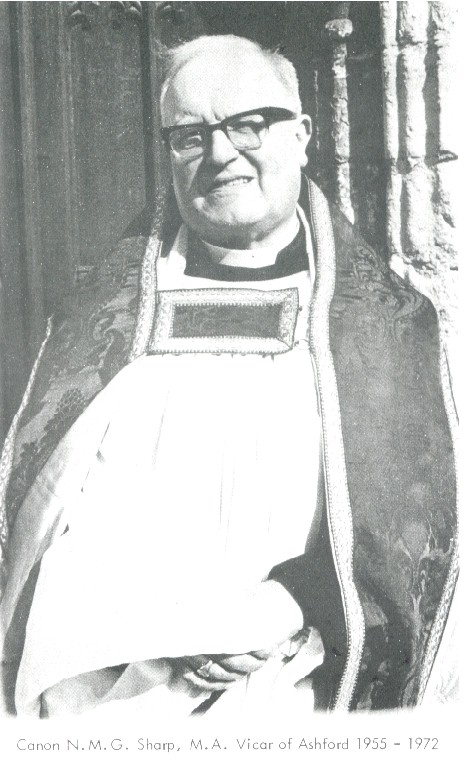
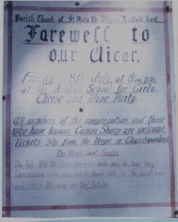
Canon Neville Maurice Granville Sharp M.A. - 'Read in' 1955
Canon Sharp is still warmly remembered and held in the highest regard
by all those who had cause to deal with him. Canon Sharp was a
descendent of the Granville Sharp who worked with William Wilberforce
to end the slave trade. Canon Sharp was a child of the century,
living a long life and attaining 90 years of age. He served his
Curacy at All Saint's, Maidstone, and then went on to become the Vicar
of All Saint's Birchington for several years, coming to Ashford in
1955. He seemed to gain immediate respect from all classes
of men, and this was his great talent in strengthening the whole parish
and increasing the success of an already lively and diligent
congregation. Canon Sharp was quite a forward looking man; he was
always looking for new ways of doing things, and this was at a time
when Series 1 & 2 services were being experimented with. The
fact that Liturgical Revision has now been proved to be an expensive
farce which has put many folk off the CofE or Christianity generally is plain to see,
but in the days of Canon Sharp it was perhaps more reasonable to be trying new ways; while still of course keeping the main services as they always had been. The feeling one gets when talking to those old Parishioners who remember Canon Sharp was that he introduced new ways and experiments in a careful and sympathetic manner - not uprooting the foundations laid by previous generations, very unlike some of the high-handed and autocratic changes enforced upon us by some clergy these days. Canon Sharp could always find a compromise: one example of this is shewn quite clearly by the following tale: The bells needed considerable work upon them to get them into good going order, and so they were taken out of the tower. The snag was that one of the then local bellringers was due to marry the week before the bells would be dedicated, and was very keen that the bells should be rung at her wedding. Canon Sharp pondered this and came up with a splendid compromise solution. Why, he thought, can we not have the test ring upon the bells and happily coincide it with the ringing following the wedding? And so it was that the bride could have the bells to ring her out of the church, and this counted quite legitimately as the ringing to test the bells out prior to their dedication. This sort of attitude of 'if there's a will, there's a way' was simply typical of Canon Sharp's generous Christian spirirt. Another thing which Canon Sharp counted as very important was the regular visiting of Parishioners, and he and his Curates saw to it that this was carried out with the utmost diligence. Their efforts were further supplemented by a system of street wardens throughout the parish to keep contact with the people and report any special need to the Clergy. The Clergy of this and previous generations always seemed to put the needs of their sick and needy parishioners before visits to Archdeacons or Bishops; this was of course as it should be, and generally the dignitaries of the era, whilst wishing they saw more of their brethren understood the need. Although Ashford had always been a fairly 'high' church, Canon Sharp was also keen that as a Parish Church it should be there for all to use (always in a duly reverent manner) and introduced some extra informal services featuring extempore prayer, and leaning more toward the 'Low Church' modern Evangelical wing. Again, this was done sympathetically and because Canon Sharp had gained the trust and respect of all his men. Old parishioners describe him as the sort of man of whom you would ask a straight question and be given a straight answer; none of the hand-wringing 'maybe this' and 'maybe that' which we see all too much of today.
Canon Sharp also took a lively interest in the Church Choirs, and his Incumbency saw them flourish in standard and numbers, with respected Organists & Choirmasters such as Michael Lewis, son of the then Vicar of Kennington as Organist & Choirmaster. What had become the 'main' Parish Communion was sung by the Boys and Men choir each Sunday, and featured Choral settings by such renowned composers as Darke and Vaughan-Williams. There was a waiting-list of keen boys waiting to join the choir, which also sang Choral Evensong each week. Canon Sharp was careful to remember that girls also wished to sing, but with foresight which has become more obvious in recent years where Church Choirs have become Boys and Girls choirs, and all the boys have left(!) he decided that a girls choir would sing Matins following the Parish Communion service. This fitted the bill splendidly, as it was Matins to which the girls of Ashford School would come each week to offer their worship, prayer and praise to the good God who had kept them safe during the weekly round. Weddings, too would be shared between the two choirs, and often they would be required to augment other choirs in the area, especially Christ Church. This would make an interesting sight some Saturdays - having sung for a wedding at the Parish Church the company would scurry to Christ Church or another local church for a second wedding! It is likely that more history regarding Canon Sharp's Incumbency will be added to this section, but this may just give a flavour of the glorious days 1955-72; these really were the halcyon days of the Parish Church.
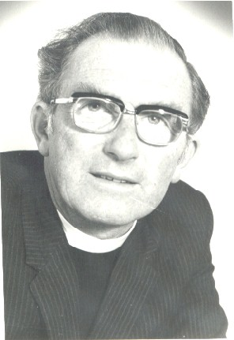
Canon Aubrey Kenneth Wright B.A. , B.D. , A.K.C. - 'Read in' 1972
Poor Canon Wright had a tough act to follow in living up to the
Ministry of Canon Sharp! To make matters worse, it was in about
1972 that the Borough Council embarked on the demolition of so many
beautiful parts of old Ashford in order to build the hated ring-road
and strangle the town. This would, in no small part have deterred
new folk from negotiating their way into the town, just as the recent
ring-road works have upset all those who, by nature of their business,
find themselves having to negotiate the road. Everyone
asked
seems to remain conspicuously quiet with regard to this period of the
Parish Church's history. I am given to understand that Canon
Wright was a good and kind man but not so decisive as Canon Sharp.
The problem really would seem to
be that, since 1972 there have not been a great deal of folk joining
the church, and replacing those who either died or moved away - to some
extent this was probably a result of the disastrous works forced upon
the town by the Borough Council with the ringroad. Now the
descendants of that Council, having been at least partly responsible
for the drop in congregation numbers since 1972, want to wreck the
church interior. Yet it was they who created these physical
barriers to churchgoing at the Parish Church by marooning the town
centre with their preposterous ring-road/Charterhouse/Tufton Centre
works!!
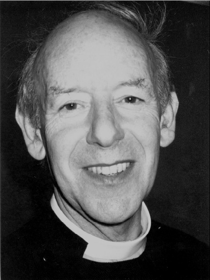
Canon John Wilfred Everett M.A. - 'Read in' 1982; Retired 2002.
Canon Everett appears to have had a fairly succesful time at the Parish
Church in the early part of his Ministry, with his overseeing of the
building of the current Parish Hall and the alterations to the West End
of the Church to provide the Crothall Room (to the memory of Charles
Crothall, Sacristan for many years) a room for storing the Parish
Archives, a toilet and basic kitchen and the insertion of an inner wall
with double glass doors to enable the church to be kept secure, yet
still allowing visitors to view the interior when it is locked.
It was a great pity that such a promising Ministry - in his early
days he was also assisted by a very good Deaconess: Deaconess Margaret
- should have been
hampered and spoilt, particularly toward the end, by some quite vicious
bullying of the Vicar by certain members of his congregation - we
understand he had to take a year off sick as Vicar as a result of this.
Canon Everett is a good, holy and quiet man who did not deserve
the certain outpourings of spite heaped upon him by certain folk.
These persons also took it upon themselves to force the male-only
choir to
accept girls (rather than restarting a girls choir as in Canon Sharp's
time) with the usual result of many of the boys
leaving, subsequent difficulty in recruitment of any children at all,
and a resultant
drop in standards which has prevented the - once annual - Choir outings
to sing at Cathedrals across the Country from taking place for over
two decades now. As so
often happens it only became clear just what we had lost once Canon
Everett had retired. He kept the Church true and faithful to its
inherited high-quality Churchmanship and musical tradition and his wife
had looked after
much of the organisation of matters such as weddings, and during the
interregnum, bellringers were turning up to ring for weddings for which
they weren't required etc. In short, it became a horrible mess.Will Ashford Parish Church ever witness the induction of a Vicar, rather than a Priest-in-Charge and continue in its true churchmanship? Unfortunately, this now cannot be as the Church of England has abolished 'The Parson's Freehold' as of January 2011, so that all Clergy inducted to a Parish after this date can only be under Common Tenure and thus their ability to do the will of God & their faithful people may be impeded by a Bishop.